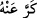

bana!” kavli bu hususa delâlet etmektedir. Çünkü bunu ancak yanıp tutuşan biri söyler.”
57. Veya: Allah bana hidayet verseydi, elbette sakınanlardan olurdum.
“Veya:” şöyle diyecektir: “Allah” beni hakka irşâd ederek “bana hidayet verseydi,
elbette” şirk ve mâsiyetlerden “sakınanlardan olurdum.” Bir hadîste şöyle
buyrulmaktadır: “Cehennem ehlinden cehenneme giren herkes cennetteki yerini görür
ve “Allah bana hidayet verseydi, elbette sakınanlardan olurdum.” der ve bu kendisi
için bir pişmanlık olur.”[135]
58. Yahut azâbı gördüğünde: Keşke benim için bir kez (dönmeye) imkân bulunsa
da iyilerden olsam! diyeceği günden sakının.
“Yahut azâbı” ayan beyân gözüyle “gördüğünde: Keşke benim için bir kez” daha
dünyaya dönmeye “imkân bulunsa da” akîde/inanç ve amelde “iyilerden olsam!”
diyeceği günden sakının.
el-Kâmûs’ta belirtildiği üzere “ acıdı, “ ise döndü demektir. “ kez ve
defa anlamınadır.
“Yahut” ifâdesi nefislerin şaşkınlıkla, faydasız bir pişmanlıkla ve hiçbir fayda
sağlamayacak mâzeretlerle bu sözlerden uzak kalamayacağına delâlet etmek içindir. Bir
topluluğun bu sözlerden birini, bir başkasının da ötekini söyleyeceği de ifâde edilmiştir.
59. Hayır (dönemeyeceksin)! Âyetlerim sana gelmişti de sen onları yalanlamış,
büyüklük taslamış ve inkârcılardan olmuştun.
(Allah ona şöyle buyurur:) “Hayır” Sana irşadda bulunuldu. Eğer “” kelimesi,
olumsuz bir cümleden sonra onun hükmünü olumlu kılmaya mahsustur. Oysa bu
sözlerden hiçbirinde olumsuzluk yoktur.” dersen, şöyle derim: Bu kelime, ikinci ifâdeyi
reddetmektedir. Çünkü keşke lâfzı olumsuzluk anlamı içerir. Çünkü o birincisi
bulunmadığı için ikincisinin de bulunmadığını ifâde etmektedir. Yâni “Allah bana
hidâyet verseydi, elbette sakınanlardan olurdum.” Fakat hidayet vermedi. İşte Allah
Teâlâ bunun üzerine: “Hayır, sana da hidâyet vermiştim.” buyurmuş olmaktadır.